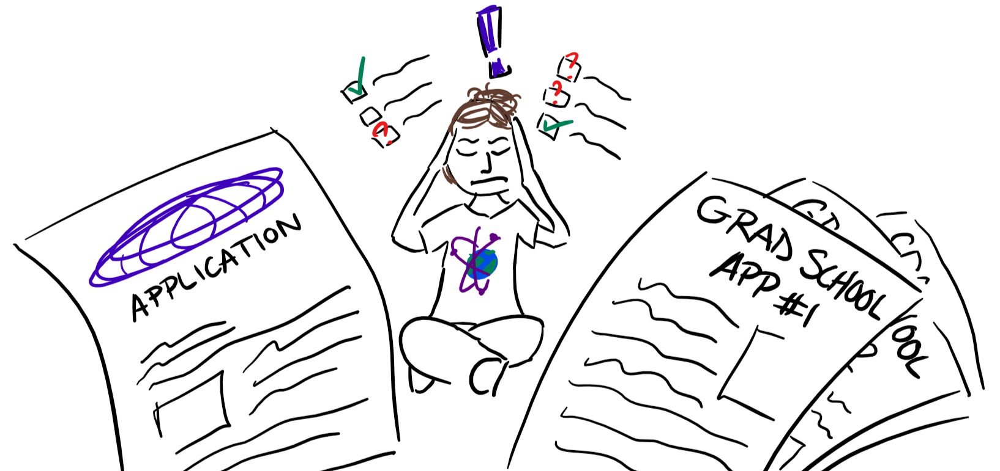

Applying to Grad Schools in The US: a primer

Applying to the US for a Master’s degree in a STEM major can be daunting. It isn’t that there is a lack of information, but the opposite. The internet is flooded with information about this - all of which seems relevant. The process can be overwhelming and stressful. This post is meant to be a (very) gentle introduction to anyone considering further studies after finishing their undergraduate courses. It will walk you through the very basics and point you to resources that I found useful back when I was applying. Let’s get started!
There are 4 main steps to the application process
- Give 2 exams
- Decide where you want to apply
- Prepare your application
- Apply!
Let’s break down each step.
1. Give 2 exams:
You have probably heard of the GRE and the TOEFL. Almost all US universities require you to give these tests as part of your application.
What are these Tests?
Here’s a quick summary:
The GRE (or Graduate Record Examination) is a standardized test that is often required when you’re looking to apply to graduate programs in the US (or other countries too). It covers basic high school math and verbal reasoning. In other words, math and English.
The TOEFL (or Test of English as a Foreign Language) is a standardized test to measure the English language ability of non-native speakers. It gauges whether or not you have the English language skills (speaking, listening, reading, writing) required to be eligible to study at US (and other) universities.
99% of the time, you will be required to give both exams as part of your application and the scores you receive will have a direct impact on your application, so it’s really important that you do well on these exams! Here’s the thing about these exams: you can give them without really knowing the exact program or courses you want to study when you apply. The implication here is that you can give these tests early on without having decided on where you want to apply, and without worrying about the rest of your application.
Some logistics to consider
Cost (as of October 2020):
- TOEFL: $180
- GRE: $160
Your scores are valid for 5 (GRE) and 2 (TOEFL) years. This means you can give these tests whenever you have the time to prepare, and use the scores a few years later.
A ‘good score’ for the GRE depends on where you choose to apply and to what program. Higher ranked universities will ask for higher scores. Some people prepare for a 1-2 months, some prepare for much longer. There is no single right way. Assess your personal situation and choose what works for you.
These are standardized tests. That means with a good preparation strategy and abundant practice, you will do well!
The only advice I would give is to give a mock GRE exam (linked below) before you start any sort of preparation. That will give you a sense of the exam and establish a baseline performance level. From there, you can prepare and see your score improve.
There is a world of resources on how to prepare for the GRE and TOEFL. Don’t get overwhelmed! Pick a strategy you can execute and you will be okay.
Further resources:
Now that you’ve given the 2 tests, it’s time to consider where you want to apply for graduate school…
2. Decide where you want to apply
This entire step requires you to answer one question before you get started:
What do you want to study?
Answering this question is very important, it will guide your decisions on where you end up applying. Here are certain things you should keep in mind when deciding on your final list of universities:
Courses offered
Once you know what you want to study, you can use that information to decide which courses you will want to study, and you can check whether a particular university offers those courses and what the reputation of the course is.
Cost
Some universities have higher tuition costs than others. Particular universities may offer better chances of financial aid. Some cities are more expensive to live in than others. Find out what these numbers look like and make an informed decision.
Rankings
Here’s some advice: if you’re applying to multiple universities (you should), consider splitting them up into 3 ‘tiers’. Apply to a few colleges that are your ‘ambitious’ choices. These are your dream schools. Apply to a few that are ‘mid tier’ – these will offer higher acceptance rates and you will have a better chance of getting in. Apply to at least one ‘safe’ choice – a college you are almost certain you will get into.
Personal experiences
It’s always good to consider the personal experiences of the alumni of a particular college. Try to use LinkedIn or ask your friends if they know anyone who has been to a college and ask them about their experience. This can help you in making a better decision!
In a nutshell: apply to multiple universities, consider ‘tiering’ your choices, and focus on the courses offered, total cost, and rankings to put together a list. Remember, college websites are your friends! Colleges put up a lot of information on their websites including costs, course listings, and sometimes even expected GRE/TOEFL scores.
Further resources:
- USNews is a great resource for university rankings
Time for step 3…
3. Prepare your application
A ‘complete’ application includes your test scores, a statement of purpose, a few letters of recommendation, a resume, and some documentation (mainly your undergraduate transcripts and provisional degree). So far, we’ve looked at the exams you need to give and how to decide where to apply for colleges. The next step is to complete the rest of your application. Here’s some quick information on the statement of purpose and letters of recommendation:
Statement of Purpose (SoP):
The SoP is a brief essay that answers a few questions: why do you want to study at a particular university? Why are you a good fit for that program? Why is the program a good fit for you? How are you qualified for what the program demands?
Here are some starting tips to keep in mind:
- you are telling a story, not writing a series of events
- you’re telling them why you want to study what you’re applying for and
- why they’re a good fit for you and vice versa
- you’re trying to make the case that you are really passionate about what you’re going into
- talk about specifics – why their university? Why that program? What do you know that’ll help you there – what do you want to learn that they teach there? Any professor whose work matches what you want to learn?
You want to include:
- your goals in the short and long term
- what you want to gain from the degree and how you plan on using it
- evidence of your past successes: GPA, publications, projects deployed, etc.
This may be a good resource if you’re looking for a format to get started with.
Here are some samples that I used.
Just keep in mind that there is no ‘correct’ way to write an SoP. These are good guidelines, but if you feel your story is better told in a different format or structure, do that! Most importantly, keep writing and changing things rather than trying to get the first draft perfect. Iteration is your friend!
Letters of Recommendation (LoRs)
These are letters that your professors (or work supervisors) will write endorsing you as a deserving candidate for a place at the university where you’re applying to.
Here’s some things to keep in mind:
- When you ask your professors (or supervisors) to write you an LoR, express what you think they should highlight. Express your expectations!
- Keep in mind that as you apply, your professors (or supervisors) will have to submit these letters on their end. Therefore, it’s important that you keep in touch with your professors because you may have to remind them to subit the LoRs in case they forget.
Transcripts and provisional degree:
You don’t really need to do much here, just find out how you can get your transcripts and provisional degree from your college and have it sent over to wherever you are applying. Some colleges accept these documents sent to them via your college’s email ID, some require physical copies, check what the college is looking for!
Resume:
You will likely need to send in a resume as part of your application. Keep in mind that you are also sending in an SoP, so if there is any information that you would like to cover that you did not include in the SoP, this may be a good place to do it!
So there it is. A complete application. You now have your SoP, LoRs, you have your documentation ready and you have your standardized test scores. You have also decided where you want to apply. That leaves you with only one thing to do…
4. Apply!
The most important thing when applying in to figure out when the application deadline is for the programs you are applying to. Make sure you know exactly when those are! Again, college websites have this information readily available.
The first application you fill out may take an hour or so as you get used to the process, but everything from there onwards should be quick and straightforward.
So there it is! A gentle introduction to applying to universities in the US. You will eventually realize that this is just the tip of the iceberg. There are so many more moving parts: how long do you study for the GRE? What about visa logistics? Should my SoP be different for each college I apply to (yes, but also a little bit of no)? These are questions that need to be answered, but hopefully now you don’t get overwhelmed about the entire process. It’s really just 4 basic steps!
- Give 2 exams
- Decide where you want to apply
- Prepare your application
- Apply!
If you have any further questions, quick Google searches will get you a long way. For anything that Google cannot answer, I’d be willing to help. Contact me here!
Happy applying!